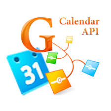
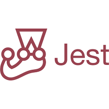
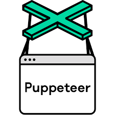
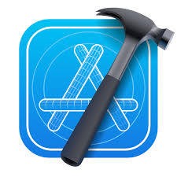
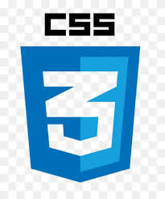

"This application allows users to view upcoming programming-related events, fetched from the Google API."




"This api can be used in the front-end of applications that are related to movies"
This is the front-end of a movies application that uses the movie_api to provide details about movies
This is a native app that allows users to exchange messages


This application provides information about pokemon characters.

This is the front-end of a movies application that uses the movie_api to provide details about movies